Продолжаем рассматривать возможности ConstraintLayout.
match_constraints
В ConstraintLayout мы, как и раньше, можем в качестве ширины/высоты View использовать wrap_content или указать фиксированный размер в dp. А вот match_parent здесь использовать не рекомендуется. В документацие написано следующее:
You should not use match_parent for any view in a ConstraintLayout. Instead use "match constraints" (0dp)
Нам взамен match_parent предлагают использовать match_constraints, он же 0dp. Если match_parent растягивает View по размеру родителя, то с match_constraints View займет пространство, доступное между объектами, к которым он привязан.
Давайте посмотрим все три режима на примере TextView, который привязан к левой границе слева и к кнопке справа.
wrap content
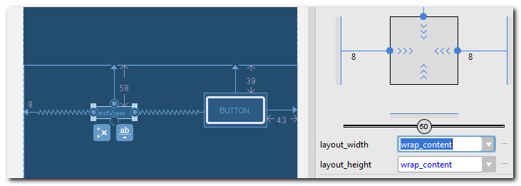
Ширина по содержимому
фиксированный размер
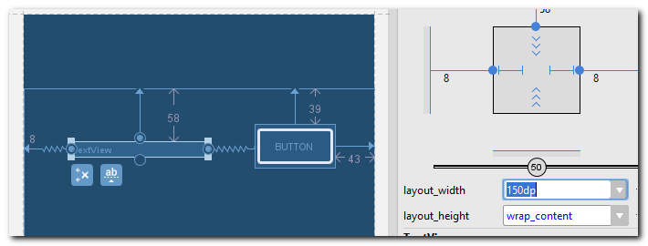
Явно указываем ширину в 150dp
match constraints (0dp)
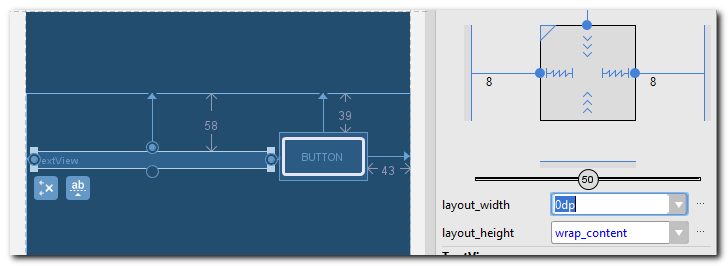
TetxView растянут между объектами привязок.
Эти режимы можно переключать в Properties не только через layout_width свойство, но и нажатием на специальный значок
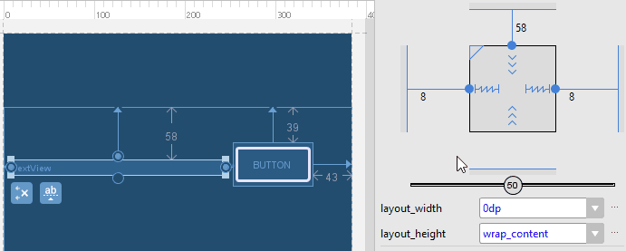
Обратите внимание, что этот значок меняется в зависимости от режима. При wrap_content он выглядит как елочка, при фиксированном размере - как отрезок, а при match_constraints - как пружина.
Т.к. match_constraints растягивает ваше View между объектами привязок, то ему нужна двусторонняя привязка. Если ваше View привязано, например, только слева, а правой привязки нет, то match_constraints будет работать как wrap_content.
Выравнивание по центру
Вы можете использовать двустороннюю привязку, чтобы выровнять два View по центру.
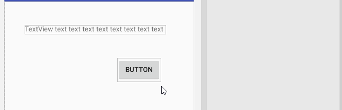
И можно использовать скролл, чтобы менять положение относительно центра.
Выравнивание по тексту
Допустим, у нас есть два TextView с разными размерами шрифтов. И нам надо поместить их рядом так, чтобы тексты лежали на одной линии.
View можно выровнять по нижней границе сделав привязку между нижними границами

Но в этом случае тексты будут не на одной линии.
Чтобы это исправить, можно использовать выравнивание по тексту
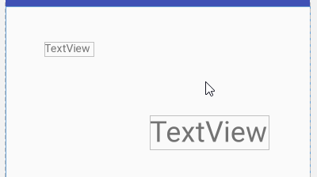
В этом случае тексты находятся на одной линии, а нижние границы - нет.
Инструменты в toolbar
В toolbar есть несколько инструментов, которые могут помочь в работе.
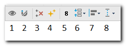
Я пронумеровал их на скриншоте. Пойдем по порядку.
1) Показать/скрыть привязки
Если включено, то вы будете видеть все свои привязки на экране. Если выключено, то видны будут только привязки выделенного View.
2) Автопривязки
Если включено, то вы сможете создавать привязки к родителю, если поднесете View к границе родителя.
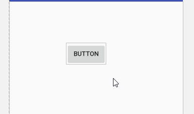
Либо можно создать двустороннюю привязку, если поднести View к центру родителя
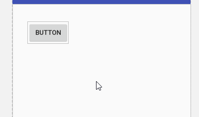
3) Удалить все привязки
По нажатию этой кнопки все ваши привязки на экране будут удалены. Если нечаянно нажали, то жмите CTRL+Z и все вернется.
4) Создать привязки
Создает привязки для всех View на экране. Но делает это не очень хорошо. Возможно в будущих версия исправят, но пока что я не советую использовать.
5) Отступ
Здесь вы можете автоматически задать, какой отступ будет использован по умолчанию при создании привязки.
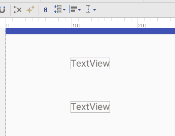
Первая привязка создалась с отступом 8. Затем я поменял значение по умолчанию на 24. И вторая привязка создалась уже с отступом 24.
6) Разное
В этом пункте три типа операций над View
Собрать
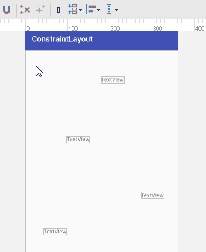
Собираем вместе несколько выделенных View сначала по горизонтали, затем по вертикали.
Эта операция не создает никаких привязок.
Растянуть
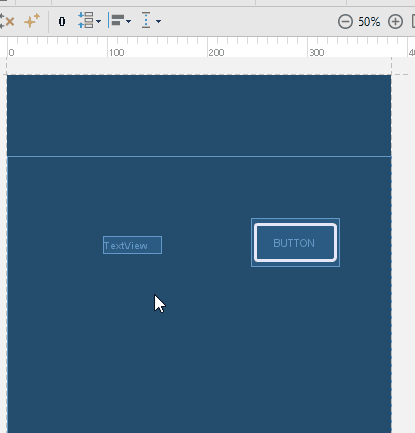
Растянет View между ближайшими объектами.
Можно равномерно растянуть несколько объектов
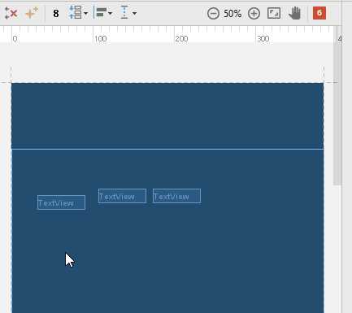
Эта операция не создает никаких привязок.
Разместить равномерно
Поможет равномерно разместить View
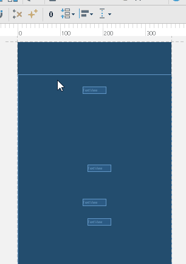
7) Выравнивание
По горизонтали: по левому краю, по центру, по правому краю
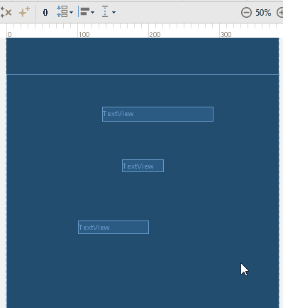
По вертикали: по тексту, по нижнему краю, по центру, по верхнему краю
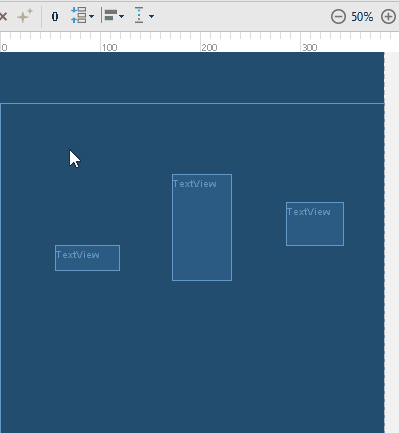
Нижний ряд кнопок - это центрирование. Оно создает двухстороннюю привязку. Есть два режима.
Обычный, когда привязка создается к близлежащим объектам
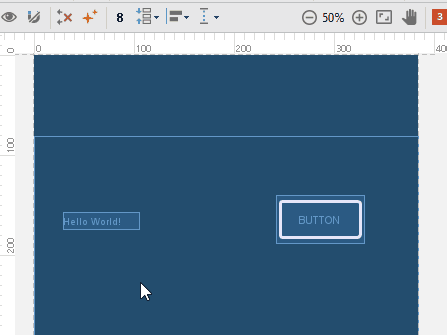
И родительский, когда привязка создается к границам родителя.
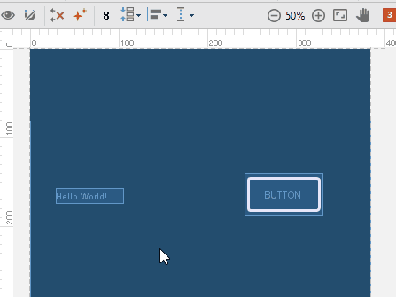
8) Направляющие
Это линии, которые вы можете использовать для создания привязок.
Рассмотрим пример с вертикальной направляющей. Добавим ее на экран и отрегулируем положение
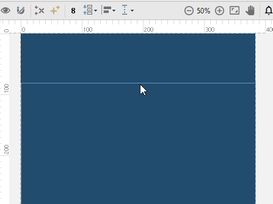
Вы можете позиционировать ее либо отступом слева, либо отступом справа, либо процентным соотношением к ширине родителя.
Рассмотрим пару примеров использования
Простой
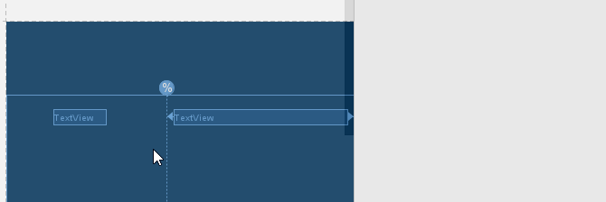
С помощью направляющей разделяем ширину экрана на два TextView
Пример посложнее
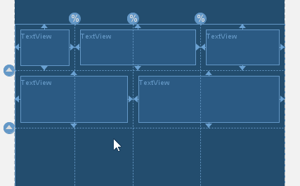
Здесь уже несколько направляющих, с помощью которых мы построили сетку из TextView
Соотношение сторон (Aspect ratio)
Рассмотрим на примере высоты View. Если у View есть двусторонняя вертикальная привязка и значение высоты установлено в match_constraints (0dp), то View растянется по высоте между объектами привязки. Мы можем настроить так, чтобы высота в этом случае не растягивалась, а зависела от ширины View.
Это делается так
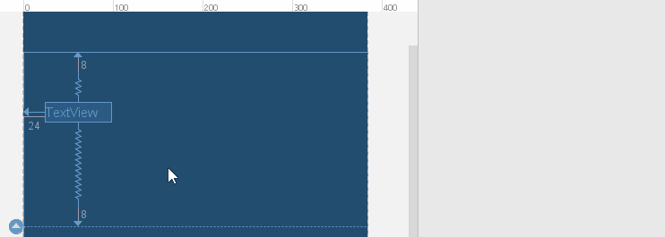
Для View с двусторонней вертикальной привязкой ставим значение высоты в 0dp. View растягивается по высоте. Затем, включаем режим соотношения сторон, нажав на треугольник. Задаем соотношение ширины к высоте - 3 к 1. Т.е. высота теперь будет в три раза меньше ширины.
Меняем ширину, добавляя в TextView текст
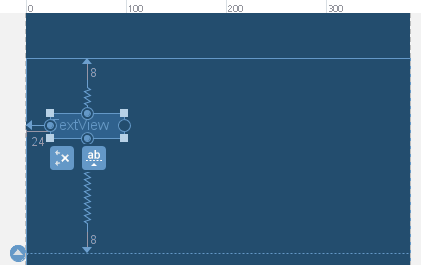
С изменением ширины меняется и высота, чтобы соблюдалось установленное соотношение сторон 3:1.
Если у вас для View есть горизонтальная и вертикальная двусторонние привязки и для высоты и ширины установлено значение match_constraints, то вы можете переключать соотношение сторон: высота зависит от ширины или ширина от высоты. Для переключения надо нажать на треугольник
Сначала соотношение сторон выключено
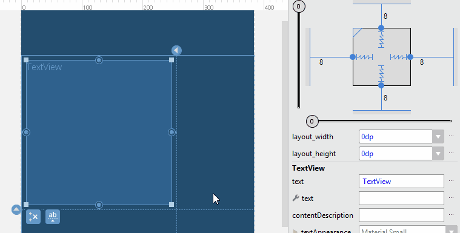
Высота и ширина View не зависят друг от друга.
Затем мы включаем режим, когда высота зависит от ширины. В квадрате справа сверху появляется жирная вертикальная линия.
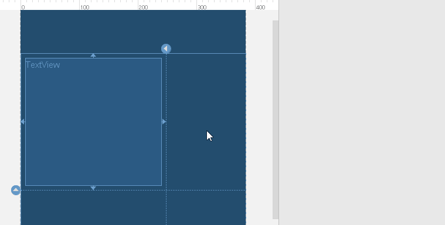
При изменении ширины меняется высота. А вручную изменить высоту не получается.
Затем ширина зависит от высоты. В квадрате справа сверху появляется жирная горизонтальная линия.
При изменении высоты меняется ширина. А вручную изменить ширину не получается.